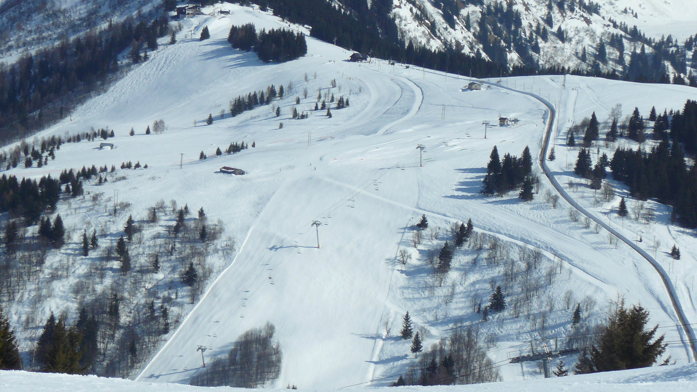

Tramway du Mont Blanc
Un peu d'histoire
L'idée de départ de ce train était d'atteindre le sommet du Mont Blanc. La construction du premier tronçon à débuté en 1905. Après des difficultés financière en 1910 concernant la poursuite du traçé au delà du Col de Voza, le projet fû définitivement arrêté à son terminus actuel du Nid d'Aigle à 2372m d'altitude.
D'important travaux ces prochaines années vont lui offrir une seconde jeunesse avec une gare semi entérrée au niveau de Bellevue, équipée d'un nouveau point de croisement. Aussi la voie sera prolongée de quelques dizaines de mètres au niveau du Nid d'Aigle pour permettre un accès facilité par rapport au terminus actuel en pleine pente.
D'important travaux ces prochaines années vont lui offrir une seconde jeunesse avec une gare semi entérrée au niveau de Bellevue, équipée d'un nouveau point de croisement. Aussi la voie sera prolongée de quelques dizaines de mètres au niveau du Nid d'Aigle pour permettre un accès facilité par rapport au terminus actuel en pleine pente.

le tramway du Mont Blanc au niveau de Bellevue
Gare du Col de Voza
Gare terminus au Nid d'Aigle
La voie d'accès principale au Mont Blanc
Le Nid d'Aigle est le point de départ de la voie principale pour escalader le Mont Blanc. Après une première journée avec un passage par le refuge de Tête Rousse à 3187m d'altitude, les alpiniste continuent jusqu'au refuge du Gouter à 3863m d'altitude pour passer la nuit.
Très tôt le lendemain matin, ils gravissent alors les derniers hectomètres jusqu'au Mont Blanc, avant de redescendre dans la vallée.
Pour les non Alpinistes, le Nid d'Aigle offre un panorama magnifique sur le glacier de Bionnassay.
Très tôt le lendemain matin, ils gravissent alors les derniers hectomètres jusqu'au Mont Blanc, avant de redescendre dans la vallée.
Pour les non Alpinistes, le Nid d'Aigle offre un panorama magnifique sur le glacier de Bionnassay.
Glacier de Bionnassay vu du Nid d'Aigle
Accès au domaine skiable des Houches en hiver
Le tramway du Mont Blanc fonctionne jusqu'au Nid d'Aigle pendant la saison estivale de début juin à fin septembre. Compte tenu des conditions climatiques, en hiver, le trajet est limité à la gare de Bellevue.
Il donne alors accès au domaine skiable des Houches depuis les gares du Col de Voza et de Bellevue.
L'infrastructure actuelle limite la fréquence des trains. Les travaux en cours vont permettrent, dans quelques années, de rajouter des trains supplémentaires en hiver entre St Gervais et Bellevue.
Il donne alors accès au domaine skiable des Houches depuis les gares du Col de Voza et de Bellevue.
L'infrastructure actuelle limite la fréquence des trains. Les travaux en cours vont permettrent, dans quelques années, de rajouter des trains supplémentaires en hiver entre St Gervais et Bellevue.
Un chamois au Nid d'Aigle
Tramway du Mont Blanc en hiver

Bellevue en hiver